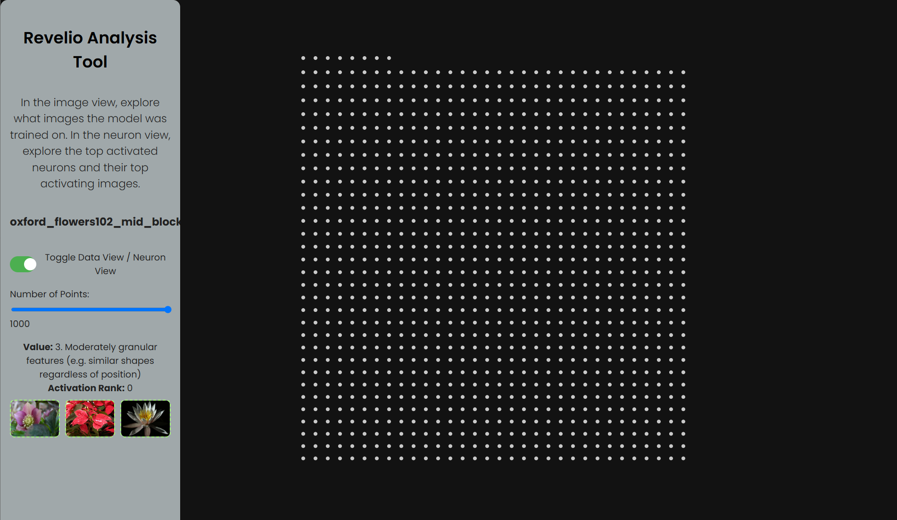

ICCV 2025
Dahye Kim*, Xavier Thomas*, Deepti Ghadiyaram
Explore how rich visual semantic information is represented within various layers and denoising timesteps of different diffusion architectures.
Start Exploring
We study how rich visual semantic information is represented within various layers and denoising timesteps of different diffusion architectures. We uncover monosemantic interpretable features by leveraging k-sparse autoencoders (k-SAE). We substantiate our mechanistic interpretations via transfer learning using light-weight classifiers on off-the-shelf diffusion models' features. On 4 datasets, we demonstrate the effectiveness of diffusion features for representation learning. We provide in-depth analysis of how different diffusion architectures, pre-training datasets, and language model conditioning impacts visual representation granularity, inductive biases, and transfer learning capabilities. Our work is a critical step towards deepening our interpretability of black-box diffusion models.

Explore a static demo of the analysis tool, where users can examine training image data, identify the top activated images, see which images triggered them the most, and discover shared attributes among them. The full version enables users to generate views for any layer, dataset, and timestep.
Click on an image to explore what the layer captures